An user can directly process sentences by sending a POST request directly to the gateway at the following address: https://rat-gateway.azurewebsites.net/api/process.
The request body should contain the "openApiDocumentUrl", "sentence" and "language", all in string format. The user can also specify the wanted "path" and the processing will start from identifying the query, path and header parameters. The response will contain the "url", the "method", the "headers" and the "body" that will always be an empty object for now.
If we did not identify the exact path that matches the user sentence, the response will be a list of suggestions. As in the image below.
The user can take one of this suggestion and send another request that includes the chosen path and the response will be the same as in the first case presented.
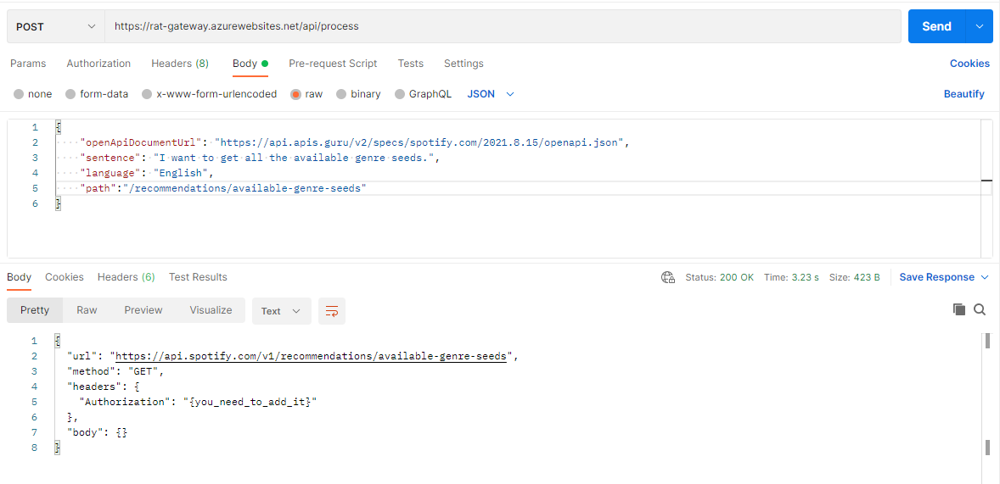The home of the application has a form that allows the user to specify the link to the Open API document and a sentence.
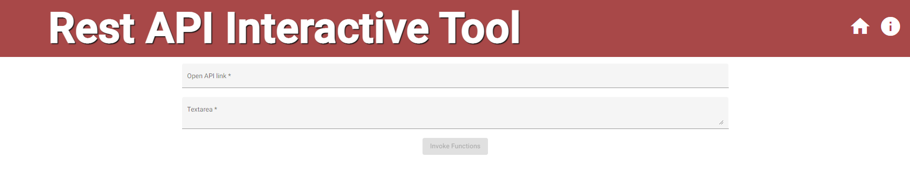When the both fields are completed, the Invoke Functions buttons will be enabled and the user cand send the data in order to be proccesses
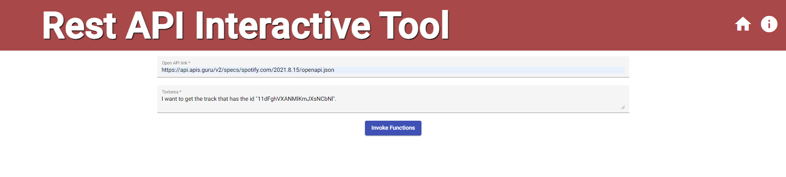The result can be seen in the image below.
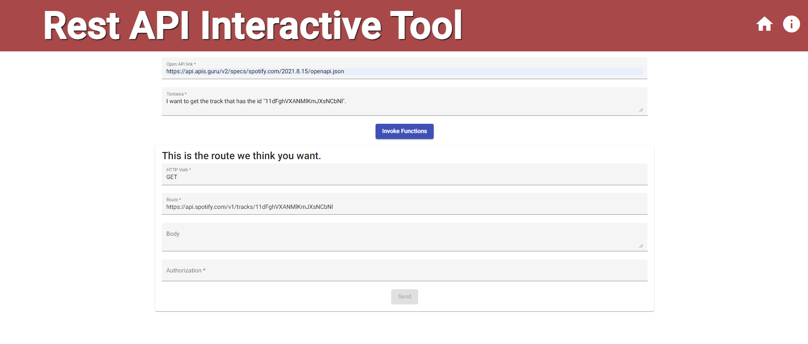We also force the user to complete the requred parameters before sending the request.
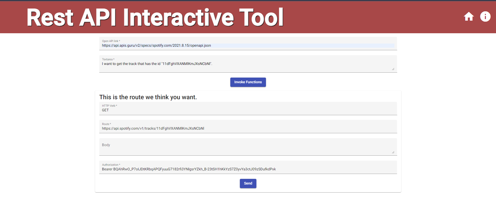After sending the request, we will display the json received from the API in the page.
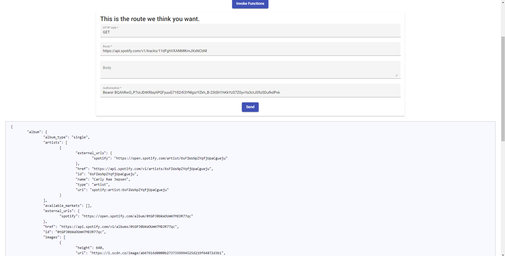For the suggestions, the user can click on one of the uptions and the inputs will be processed again.
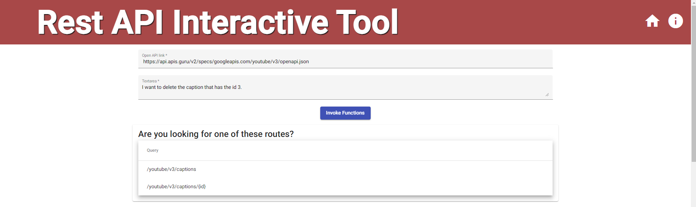 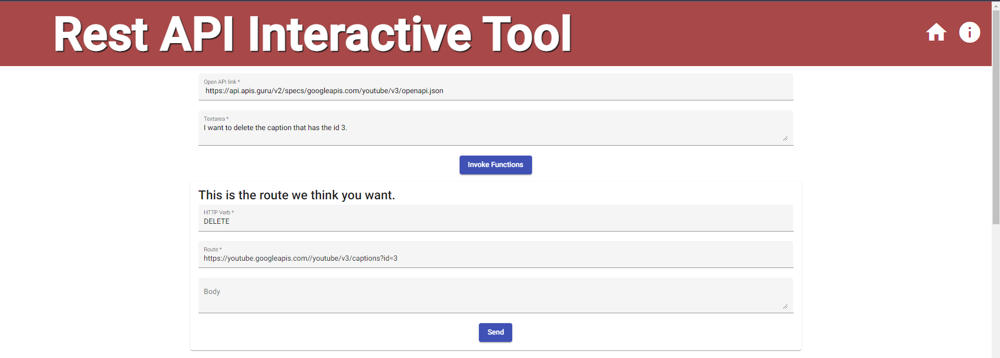Our algorithm is successful when tested more simple paths such as "/albums", "/tracks" and can identify the difference between "/albums" and "/albums/{id}" if the identifier is specified : "I want to get the album that has the id 3."
It can also identify the path and parameters for more complex sentences such as "From the album that has the identifier 3, get me all the tracks in the market 1, with the limit of 5." as we can see in the fist image
However, there are still some paths that cannot be identified such as "/me/player/devices", but this case can se soved by the suggestions funtionality.
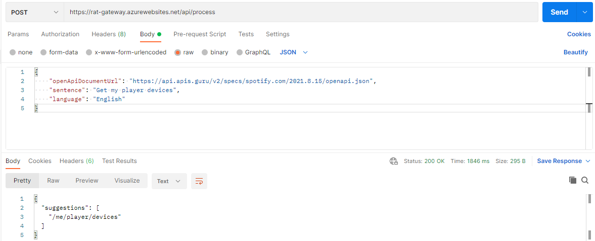An aspect that was overlooked is the parameters that with names such as "user_id" which will not be identified.
Here the paths are more simple, and the algorithm, with a little help from the suggestions feature works.
However, the algoritm cannot identify paths such as "/country/all" or "/help/countries". In the first case, we assumed that a resource can be only a noun and all will not be identified. We solved the second case by taking into account not only the lemma of the world, but also it's whole form used in the sentence. Now the path it's include in the suggestions list for a sentence such as "From help, get the countries.".
The issue with this API is that each path starts with "/v3" this means that we will never be able to identify the exact path and we will always receive suggestions.
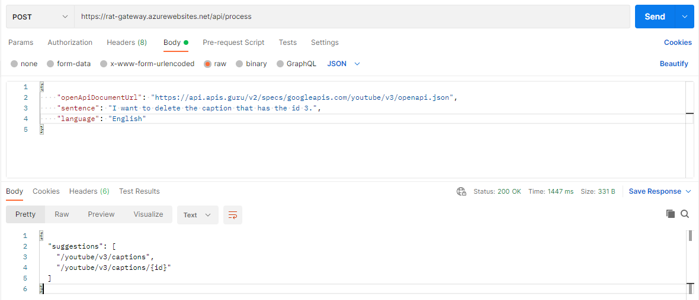 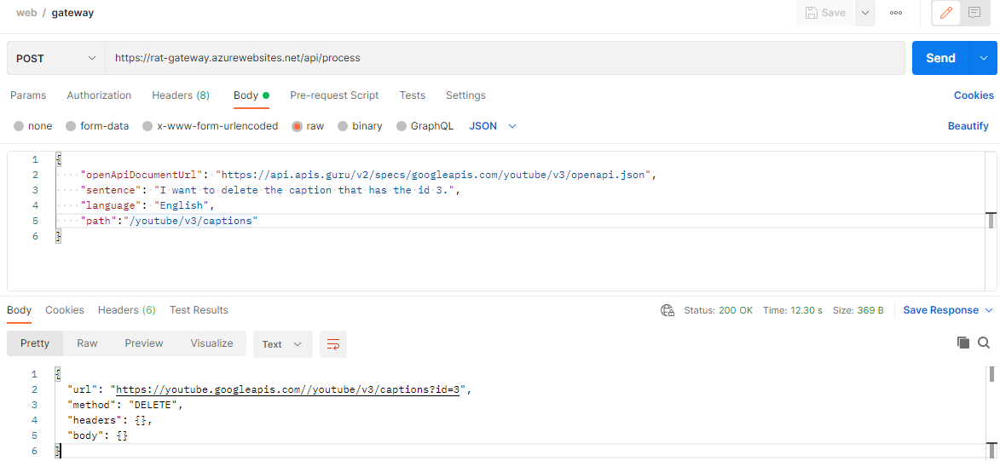Another issue that we have is the fact that here, there are some query parameters that are refferences to a schema that do not support.
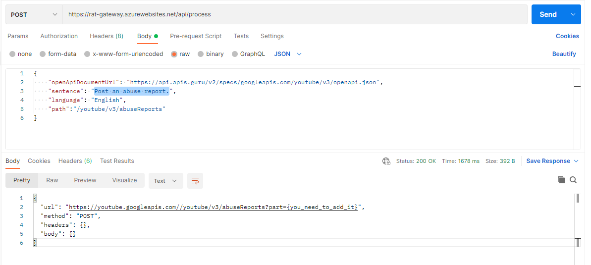